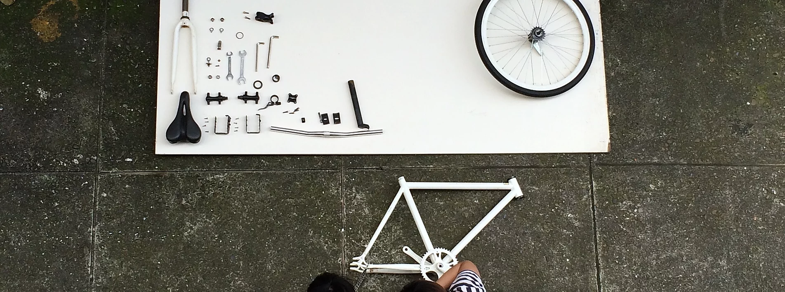
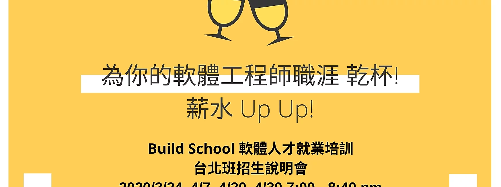
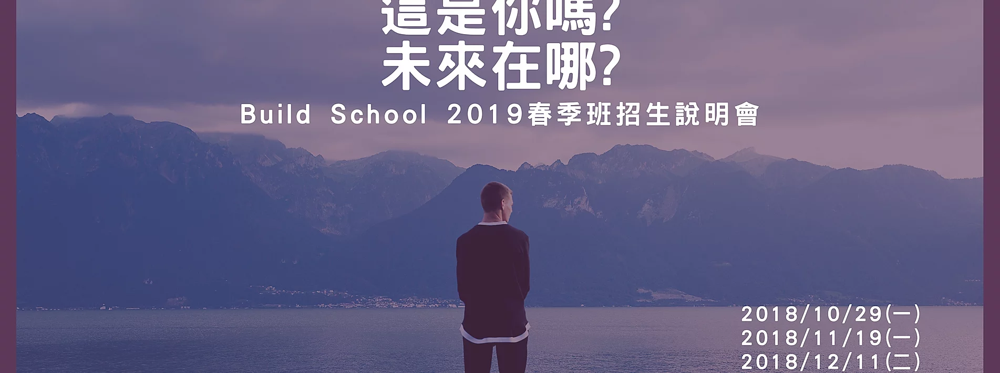

Build School
Build = 將程式碼編譯及建置成可執行的軟體
Build = 動手做
Build = 軟體開發職涯的打造者
實作及就業導向的軟體開發學校

動手實作才是真學習
透過身經百戰的實務講師、各大企業的資深軟體工程師或CTO，帶領同學實作一個真正能運作的產品開發，解決真實世界的問題，透過專題過程中的實作，培養解決問題的能力，這裏不只是程式教學或教育訓練，學的不只是技能，而是 Learn how to learn，以因應變化多端的軟體開發技能，及自我尋找解答的能力。

就業銜接
除了透過打造專題作品過程，學到了技術及硬技能外，不同於一般的軟體培訓，我們更加入了簡報技巧、履歷及面試準備、以及真正軟體開發的團隊溝通及運作，這些軟實力 (Soft-Skill) 的培養，讓同學能提早做好準備，在職場上成為一位專業的軟體工程師!

連結及影響力
每一位在軟體開發上有實務經驗的企業導師，他們是各大企業的主管、資深軟體工程師或 CTO，其人際連結及資源將帶給同學更多更好的就業機會，你將比別人站得更高，看得更遠!
18 - 24週的實作及作品開發 - 從訓練、就業、到企業連結

程式基礎教學

作品導向實作

作品發表

就業及企業導師諮詢
在課程及作品實作中，將採用這些工具 - 熟悉實務上軟體開發團隊的運作、分工及真實專案的流程


.學員之練習及作品之程式碼，皆採用主流的 git 當版本控管，熟悉版控的各種操作及實務專案運用;課程中公開之練習程式碼，提交至GitHub 上，其它學員可參考或供講師Code Review 檢閱，並熟悉 Open Source 生態及工具


.雲端平台的使用已逐漸成為一個成熟軟體開發團隊之基礎，並讓開發、測試、佈署工作更加的便利及自動化。因此學員將使用 Microsoft Azure 當成作品及專案應用系統執行的雲端平台，包括 Azure App Service 建立網站服務、Azure SQL Database 建立資料庫服務


.課程過程中的線上討論、遠端溝通、或技術分享，將可透過Microsoft Teams 或Slack 工具。另外練習的程式碼提交至 GitHub、或是 Trello 上的工作狀態更新，或是 Azure DevOps 上自動化建置的狀態，皆可發通知至 Microsoft Teams 或 Slack，透過自動化提升工作效率，並熟悉一個軟體開發團隊的協同合作
我們的講師及企業導師擁有在這些公司的工作經歷、擔任主管或資深工程師


有興趣軟體工程師徵才、或成為我們的講師或擔任指導學生的企業導師 (Inspire Mentor)，請與我們連絡
email: contact@build-school.com 電話: 02-66057606
台北: 台北市忠孝東路三段96號11F-1 (台北科大對面/忠孝新生站3號出口)
新竹: 中華大學行政大樓圖資處
© 2020 by Build School